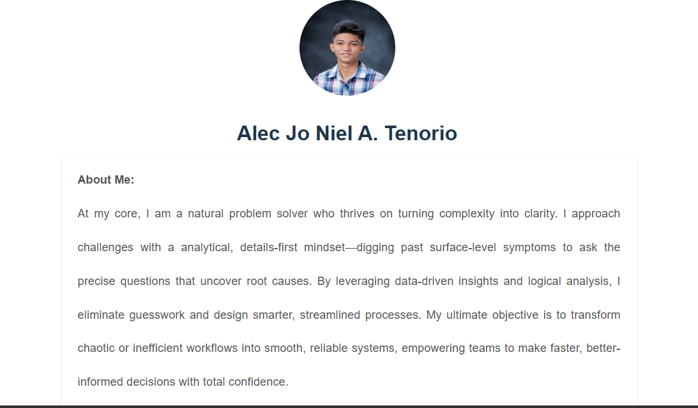
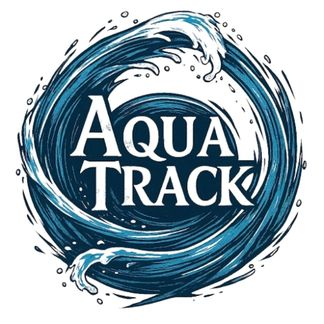

Personal Portfolio
A responsive portfolio website to showcase personal coding projects and skills.
Tech: HTML, CSS, Flexbox
View Project
About Me:
At my core, I am a natural problem solver who thrives on turning complexity into clarity. I approach challenges with a analytical, details-first mindset—digging past surface-level symptoms to ask the precise questions that uncover root causes.
By leveraging data-driven insights and logical analysis, I eliminate guesswork and design smarter, streamlined processes.
My ultimate objective is to transform chaotic or inefficient workflows into smooth, reliable systems, empowering teams to make faster, better-informed decisions with total confidence.
Primary Career Goal:
Secure a full-time, permanent role in a stable industry that offers long-term job security, consistent performance expectations, and clear opportunities for internal promotion.
Key Action Steps:
• Skill Validation: Earn relevant certifications to strengthen candidate credibility for permanent roles.
• Core Reliability: Consistently hit performance targets to establish a track record as a dependable long-term employee.
• Internal Growth: Take on cross-functional tasks to build visibility and position for senior or leadership positions over the next 1–3 years.

A responsive portfolio website to showcase personal coding projects and skills.
Tech: HTML, CSS, Flexbox
View Project
An online interface for recording and managing digital sales transactions.
Tech: Vue.js, Node.js, Laravel framework
View ProjectIdentifying trends, summarizing findings, and turning data into actionable insights.
Working with formulas, charts, pivot tables, and organized reporting workflows.
Querying databases, filtering records, and preparing clean, meaningful datasets.
Creating dashboards and visualizations that communicate data story clearly.
Connecting analysis to real business needs, strategy, and decision-making.
Breaking down complex issues and finding patterns that lead to practical solutions.